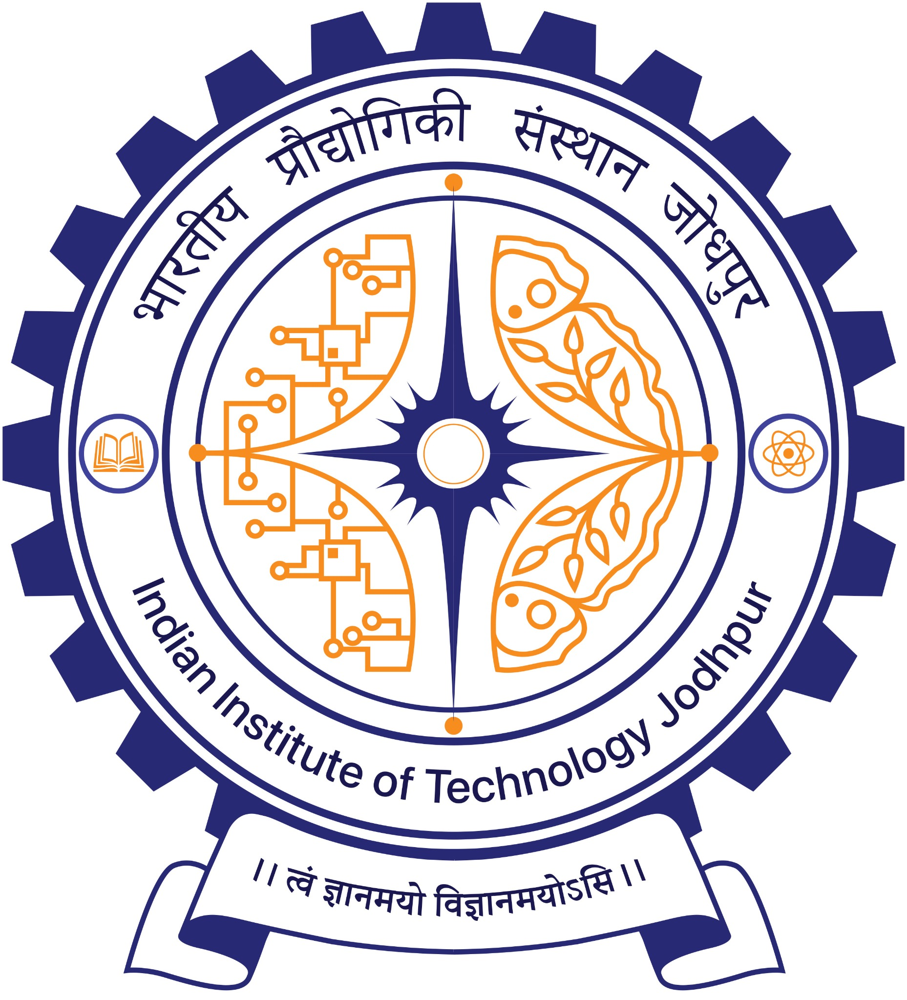

Junior Research Fellow (Ad hoc)
IGSTC–WISER Project · IIT JodhpurHigh-temperature PCM thermal energy storage for industrial heat and CSP applications; PCM screening, encapsulation studies and numerical melting/heat-transfer analysis.
OPEN TO CFD / THERMAL ENGINEERING ROLES
M.Tech in ThermoFluid Engineering from IIT Jodhpur. I work on CFD, heat transfer, phase-change materials and thermal energy storage, with hands-on simulation experience in ANSYS Fluent and COMSOL.

IIT JODHPUR01 / ABOUT
I study how heat moves through phase-change materials and use CFD to make that behaviour predictable.
My master's thesis focused on transient melting and solidification in encapsulated PCM for thermal energy storage. I also worked with fluid-flow and heat-exchange systems during industry experience.
02 / EXPERIENCE
High-temperature PCM thermal energy storage for industrial heat and CSP applications; PCM screening, encapsulation studies and numerical melting/heat-transfer analysis.
MEL7060 Heat Transfer Laboratory: tutorials, core heat-transfer concepts, laboratory support and assignment evaluation.
ANSYS Fluent simulations for pumping and heat-exchange systems, with work related to thermal-system design and optimization.
03 / PROJECTS
MASTER'S THESIS · IIT JODHPUR
BACHELOR'S THESIS · AKTU
04 / CFD SIMULATIONS
videos/CFD Model.
A curated collection of CFD simulations and numerical studies covering fluid flow, heat transfer, phase-change materials, multiphase flow, and thermal management.
05 / SKILLS
06 / EDUCATION
07 / PUBLICATIONS
Proceedings of ASME 2026 IMECE-INDIA2026 · Paper No. IMECE-INDIA2026-189225
Book chapter · Springer
08 / LEADERSHIP
Placement Coordinator · M.Tech ThermoFluid Engineering, IIT Jodhpur (2025–26)
Conference organising team · X-SEEC and ISHMT, IIT Jodhpur
GATE 2024 · Mechanical Engineering
1st position · Techtrix Competition, North Region (2017)
09 / CONTACT
Open to CFD, thermal engineering and energy-storage R&D opportunities.
Jodhpur, Rajasthan, India